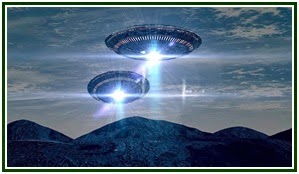

Localizada no Nordeste do estado,acima de Belém,Colares é uma ilha,com belas e tranquilas paisagens,uma ótima culinária típica paraense,principalmente na parte dos pescado,é o lugar ideal para passar um tempo e sair da rotina.Só que mais do que ponto turístico para amantes de um bom descanso,esse lugar também atrai muitos olhares dos entusiastas de um mistério,muitos mistérios pra falar a verdade.Isso porque Colares é a cidade com mais relatos de OVNIs (Objeto Voador não Identificado) do país,muito mais até do que a famosa Varginha,chegando até a ser investigada em um documentário na Netflix. Mas afinal,por que toda essa fama?
Cidade dos Aliens

Em 1977,antes de irem diretamente para o litoral do Pará,as estranhas luzes no céu já haviam sido vistas desde o Maranhão. Não demorou muito até esses "raios" ganharem fama e nome,os chupa-chupa.Tal nome se dava pelas dezenas de casos com diferentes sintomas como tumores,queimaduras,desmaios,mas principalmente anemia causada nas pessoas logo após os avistamentos,que segundo moradores chegavam a "ter seu sangue sugado".Tudo parecia ser uma baita história de pescador,até as coisas escalonarem de tamanho e pessoas começarem a morrer.Seja realmente por ataques de seres desconhecidos,ou por pura conicidência,o fato é que à noite os cidadãos viviam com medo e sempre quando diziam ver as luzes começavam a solta fogos,dispararem tiros,bater as panelas,tudo para afastar os OVNIs,e todo esse estresse por si só já aumentava muito os casos de parada cardíaca na região.A situação já estava severa,e a prefeitura não pôde mais ignorar,as froças armadas tinham que ser chamadas.